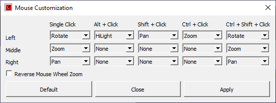

Mouse Customization¶
This command allows user to customize mouse buttons for motion model.
Note: VCollab supports generic 3D Mouse (3 Rotation + 3 Translation). We have tested this with Space mouse from 3DC onnexion only. Ideally it should work for other such devices also.
Left Button Click & Drag |
Rotation |
Middle Button Click & Drag |
Zoom in or out |
Right Button Click & Drag |
Pan |
Left Button Double Click |
Highlight a part or selection of part. |
Middle Button Double Click |
None |
Right Button Doubl Click |
None |
Shift Key + Left Button Click |
Pan |
Shift Key +Middle Button Click |
None |
Shift Key + Right Button Click |
None |
Control Key + Left Button Click |
Zoom |
Control Key +Middle Button Click |
None |
Control Key + Right Button Click |
None |
Control + Shift Key + Left Button Click |
Rotate |
Control + Shift Key +Middle Button Click |
Zoom |
Control + Shift Key + Right Button Click |
Pan |
Mouse Customization Panel

Reverse Mouse Wheel Zoom - User can customize the zooming direction for forward as well as backward scroll.
Available Commands
None |
Idle |
Rotate |
Scene / Model Rotation |
Zoom |
Scene / Model Zoom |
Pan |
Scene / Model Panning |
Distance |
3D Distance measurement between two clicks on model |
Highlight |
Selection of parts by showing part bounding boxes. |
Note
For multiple part selection, use Ctrl+Double Clicking , Ctrl+Click and Ctrl+Shift+Click should be set to “Highlight” option.
These settings can be profiled.
To deselect all parts, click on empty space with same keys and mouse button used for selection..
How to customize mouse mode to interchange mouse buttons for Pan and Rotate?
Click Edit Mouse icon .
It will pop up Mouse Customization panel.
Click drop down arrow provided for Left Single Click, it displays all possible functions.
Select Pan function.
Click drop down arrow provided for Right Single Click, it displays all possible functions.
Select Rotate. now both the functions Rotation and Pan functions are interchanged.
Click ‘Apply’ button to reflect these changes in motion model.
Realize the change by practicing some rotation and panning on model.